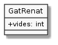

Exercici 04_01. En Renat té set vides¶
Exercici 04_01. En Renat té set vides¶
Context
Carpeta de lliurament:
04_01_vides/Continguts relacionats: Classes i objectes
Com lliurar-lo: instruccions
Enunciat
Avui coneixeràs el gat Renat. Et presento la seva foto:
![@startuml
hide circle
skinparam monochrome true
skinparam classAttributeIconSize 0
class GatRenat {
+ vides: int
+ {static} main(String[])
}
@enduml](_images/plantuml-dc767f4ac0f155cfa0513ae94294faba6e62b09f.png)
Segurament no era com te l’imaginaves, oi? Bé, es tracta d’un esquema gràfic que segueix la notació UML (Unified Modeling Languaje o Llenguatge de Modelització Unificat)
Al final d’aquesta pàgina et faig cinc cèntims més sobre aquesta notació, però ara la oblidarem per un moment, doncs estem apunt de conèixer el veritable gat Renat:
1 2 3 4 5 6 7 8 | public class GatRenat {
public int vides = 7; // vides disponibles del gat Renat
public static void main(String[] args) {
GatRenat renat; // declarem la referència al gat
renat = new GatRenat(); // creem la instància del gat Renat.
System.out.println("Al gat Renat li queden " + renat.vides + " vides");
}
}
|
Val, potser tampoc no te l’imaginaves així. Però, què esperaves? Estem a un curs de programació!
Què haig de fer?¶
Copia i executa el codi i contesta les següents preguntes:
Quin ha de ser el nom del fitxer que contingui aquest codi perquè funcioni?
A quina línia està declarada la variable
renatque apareix a la línia 6?A quina línia s’assigna el valor que es mostra per pantalla?
Quin valor apareix si a aquesta línia no s’assigna cap valor?
Què passaria sí la línia 5 no hi fos? Perquè creus?
Perquè creus que el comentari de la línia 4 parla de referència? Quina relació té amb el concepte de variable?
La línia 5 parla d”instància. En aquest context, una instància es pot entendre com el contingut real al que fa referència la variable
renat. Es diu que la instància es construeix amb l’operadornewi això implica bàsicament que es reserva espai de memòria per a allotjar tota la informació relativa a la instància.Descriu, respecte aquesta línia quina és la instància, quina la variable, quina la referència, quin el valor i quina la classe.
Pel que hem estudiat fins ara,
videspodria ser considerat una variable global dins de la classeGatRenatperò hi ha dues diferències respecte a les variables globals que varem veure a Variables i mòduls. Sabries indicar quines?Ah, i no té a veure amb el
public. D’això ja en parlarem més tard.Vinga, t’ajudo amb una d’elles amb una pregunta: pots accedir a
videsdirectament des demain()sense posat-hi davantrenat.?
El resultat de l’exercici consistirà en el fitxer en text pla, amb el codi i, al final d’aquest, en forma de comentaris, cada pregunta amb la seva resposta.
No oblidis afegir una petita capçalera en la que indiquis el teu nom, la data i una petita descripció del contingut.
Considera fer servir la següent plantilla escrita en format ReStructuredText:
#####################################
Exercici 04_01. En Renat té set vides
#####################################
* autor/a: «…»
* data: «…»
Introducció
===========
En aquest exercici «…»
Codi
====
El codi a analitzar és el següent:
::
public class GatRenat {
public int vides = 7; // vides disponibles del gat Renat
public static void main(String[] args) {
GatRenat renat; // declarem la referència al gat
renat = new GatRenat(); // creem la instància del gat Renat.
System.out.println("Al gat Renat li queden " + renat.vides + " vides");
}
}
Pregunta 1
==========
Quin ha de ser el nom del fitxer que contingui aquest codi perquè
funcioni?
«…»
Pregunta 2
==========
A quina línia està declarada la variable ``renat`` que apareix a la
línia 6?
«…»
Més sobre el diagrama UML¶
El diagrama UML és una mena d’esquema que representa els punts més significatius d’un codi.
Hi ha molts tipus de diagrama UML. Aquest en concret es diu diagrama de
classes perquè representa les classes del nostre programa. En aquest cas
només en tenim una (GatRenat) però hi podrien haver més.
En els diagrames de classes, les classes apareixen dins d’una caixa, normalment amb tres compartiments. El primer conté el nom de la classe, el segon conté les «variables» i el tercer conté els mòduls.
És important entendre que si apareix al diagrama, llavors tindrà representació al codi. En canvi, si no apareix al diagrama, simplement vol dir que qui ha fet el diagrama no ha considerat significatiu en aquest context.
Per exemple, el mètode main() sovint s’obvia, quedant el diagrama
així:

No et preocupis si no coneixes aquesta notació. Aquest no és un curs d’UML! Sovint apareixerà notació que ni apareixerà explicada.
La farem servir únicament de suport i perquè ens resultarà molt senzilla per entendre d’una ullada de què estem parlant. De fet, probablement és el seu us principal.
Si en vols saber més, però, sempre pots consultar la seva web oficial o algun dels innumerables recursos que hi ha publicats per la Web i en forma de llibres. Sí, es tracta d’una notació amb força història.